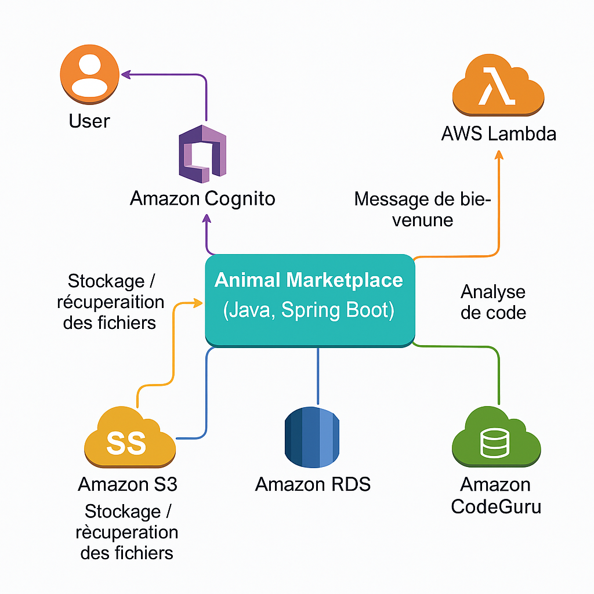

Aly CAMARA
Développeur Full Stack | 8 ans expèriences | Java / Spring Boot – AWS Certified
-
👨 🎓 Niveau d'expérience :8+ ans
-
💻 Projet actuel :Réalisation d’un projet personnel dans le cadre de ma certification AWS Developer
-
🧩 Centres d'intérêt :Technologies, cloud computing, architecture serverless
-
💡 Environnement / outils :Java, Spring Boot, AWS, HTML, développement web
Formations et Certifications
Date d'obtention : 2025
École : AWS Academy
Intitulé du diplôme : AWS Certified Developer Associate
Date d'obtention : 2015
École : Institut Nationale des Sciences Appliquées de Toulouse (INSA)
Intitulé du diplôme : Ingénieur en Informatique
Ce que je fais
Développeur
Je suis ingénieur en informatique avec plus de huit ans d’expérience, spécialisé dans le développement d’applications cloud et full stack. Certifié AWS Developer Associate, j’ai mené à bien de nombreux projets intégrant des services AWS comme S3, RDS, Lambda et Beanstalk. J’ai une solide expertise en Java, Spring Boot, HTML, et je m’engage à livrer des solutions robustes, évolutives et de qualité, aussi bien en équipe qu’en autonomie.
Centres d’intérêt
Je suis passionné de football, un sport qui m’inspire par ses valeurs de stratégie, d’esprit d’équipe et de persévérance. Grand supporter du FC Barcelone, je suis avec enthousiasme l’actualité du club et ses performances. Je m’intéresse également aux innovations technologiques, au cloud computing et à la création de solutions logicielles qui ont un impact positif.
Apprenant constant
Je suis passionné par l’apprentissage et l’évolution des technologies. Je m’investis dans l’exploration de nouvelles solutions, le cloud computing et les pratiques DevOps. Je cherche continuellement à enrichir mes compétences et relever de nouveaux défis techniques.
Projets et réalisations
Détail des missions
Projet AWS | 2025
Contexte :
Ce projet a été réalisé dans le cadre de l’obtention de ma certification, démontrant mes compétences en développement full stack, en architecture cloud et en intégration de services AWS.
L’objectif était de concevoir une solution complète, sécurisée et déployée sur le cloud, illustrant :
- La maîtrise des technologies Java / Spring Boot,
- L'intégration de services AWS dans une architecture serverless et scalable,
- La capacité à mettre en œuvre des pratiques de qualité logicielle via des outils d’analyse automatisée.
L’application répond à un besoin de digitalisation du marché des animaux, en offrant une plateforme fiable pour les échanges entre particuliers ou professionnels.
Réalisations :
Animal Marketplace est une application web développée en Java avec Spring Boot, permettant aux utilisateurs de publier et de consulter des annonces d'animaux. L'application repose sur un écosystème AWS pour garantir performance, sécurité et évolutivité :
- Amazon Cognito pour l'authentification OAuth 2.0 des utilisateurs,
- Amazon S3 pour le stockage des fichiers (photos des annonces),
- Amazon RDS (MySQL) pour la gestion des données,
- AWS Elastic Beanstalk pour le déploiement et la gestion de l’infrastructure,
- AWS Lambda pour l’envoi automatique de messages de bienvenue aux nouveaux inscrits,
- Amazon CodeGuru pour l'analyse et l'amélioration du code.
Architecture logicielle et services AWS :
Technologies :
- Langage : Java, HTML/CSS, SQL
- Framework : Spring Boot, Thymeleaf, JPA
- Base de données : Amazon RDS (MySQL)
- Build Tool : Maven, Git
- Cloud Services : Amazon Cognito, Amazon S3, Amazon RDS, AWS Lambda
- CI/CD : AWS Elastic Beanstalk, AWS CodePipeline, AWS CodeBuild
- Revue de code : AWS CodeGuru
Résultat :
- Réduction de 30% des coûts opérationnels.
- Code source disponible sur GitHub : Voir le code sur GitHub
- Application déployée : Accéder à l’application en ligne
Ingénieur Automaticien – QA et Tests automatisés | LA POSTE | 2022-2025
Contexte :
Cette mission de trois ans au sein de l’équipe Qualité et Automatisation du Datalake de La Poste s’inscrit dans un programme stratégique visant à garantir la qualité des données massives, automatiser les processus de validation et accompagner la transformation numérique de La Poste dans un environnement agile et DevOps.
Réalisations :
En tant qu’ingénieur automaticien au sein du Datalake de La Poste, j’ai contribué à la mise en place et à l’optimisation des processus d’automatisation des tests dans un environnement Big Data :
- Automatisation des tests de régression et des comparaisons de données inter-sources, réduisant les temps de validation et augmentant la précision,
- Développement d’outils d’analyse des écarts de données pour garantir l’intégrité lors des migrations complexes,
- Optimisation des processus de test avec Apache Spark, améliorant les performances d’analyse,
- Validation fonctionnelle dans un cadre agile, avec retours rapides et corrections itératives,
- Rédaction des plans de recette et définition des scénarios d’acceptation,
- Conception de cas de test détaillés intégrant les différents cas d’usage et interactions systèmes,
- Gestion des tests d’acceptation, suivi des anomalies et validation des livraisons.
Technologies :
- Langage : Python
- Outils : Airflow, Zeppelin, Spark, Jenkins,Squash QA, Jira
Résultat :
- Réduction du temps d’exécution des tests grâce à l’automatisation.
- Baisse significative des erreurs en production par détection précoce des anomalies
- Amélioration de la collaboration inter-équipes et de la réactivité face aux évolutions.
Ingénieur Etude et Développement | RENAULT | 2019-2022
Contexte :
Au sein d’une équipe Agile composée de développeurs, business analysts et d’un product manager, j’ai participé à un projet stratégique pour Renault, visant à concevoir, développer et déployer des fonctionnalités critiques pour la gestion des données et des processus métiers.
L’organisation en cycles itératifs et livraisons fréquentes m’a permis de m’impliquer sur l’ensemble du cycle de vie des fonctionnalités, de la conception technique à la mise en production, dans un environnement Java / Spring Boot / Angular avec intégration continue.
Réalisations :
Dans ce contexte, j’ai contribué à la mise en œuvre de solutions techniques robustes et à la livraison de fonctionnalités de qualité, en assurant l’ensemble des étapes nécessaires de la conception au déploiement :
- Conception et développement technique des fonctionnalités, incluant la définition des processus et des modèles de données, avec choix de solutions techniques adaptées,
- Développement en Java / Spring Boot avec mise en œuvre du TDD pour garantir la fiabilité du code dès la conception,
- Mise en place de traitements batch avec Spring Batch pour valider et transmettre les données (ex. avis d’expédition) vers Reflex et d’autres systèmes,
- Développement d’une interface Angular pour le suivi et la gestion des erreurs des traitements batch par les utilisateurs finaux,
- Intégration des fonctionnalités dans les pipelines de déploiement, assurant la validation et la mise en production dans un cadre d’intégration continue.
Technologies :
- Langage : Java, JavaScript, SQL, HTML/CSS
- Framework : Spring Boot, Spring Batch, Angular, JPA
- Build Tool : Maven, Git
- Base de données : PostgreSQL
- Architecture / Standards : API REST, microservices
Résultat :
Dans un contexte où l’intégrité des données échangées entre Reflex et les autres applications Renault devait être garantie, tout en respectant des contraintes de performance élevées, j’ai contribué à :
- Assurer la fiabilité et la précision des données échangées, grâce à une validation rigoureuse et une gestion fine des erreurs et des logs,
- Répondre aux contraintes de temps de traitement très courts, en optimisant les processus et en sécurisant chaque étape du flux de données,
- Fluidifier les échanges de données et améliorer la communication entre systèmes, ce qui a permis une meilleure cohérence et une réduction des erreurs humaines dans le suivi des stocks et des commandes,
- Participer à l’optimisation des processus logistiques, apportant une valeur ajoutée concrète aux opérations internes de Renault.
Développeur Web Java / Angular | SII | 2018-2019
Contexte :
Chez SII, j’ai participé à un projet interne visant à concevoir et développer une application de suivi des collaborateurs du groupe, permettant de gérer les associations des collaborateurs avec les périmètres et managers dans le temps, et de réaliser des recherches et statistiques sur ces associations (par exemple le nombre de consultants rattachés à un manager ou à un périmètre).
Nous étions deux développeurs encadrés par un chef de projet, avec une forte autonomie sur les choix techniques et les phases de conception.
Réalisations :
Dans ce cadre, j’ai contribué à :
- La conception complète de l’application : choix du stack technique, définition du modèle de données, création du projet à partir de zéro, installation et configuration de l’environnement,
- La rédaction des spécifications fonctionnelles et techniques, en lien direct avec les utilisateurs pour recueillir et formaliser les besoins,
- Le découpage des tâches et la gestion des priorités au fil du projet.
- Le développement des fonctionnalités, incluant :
- La couche web avec Angular,
- Les services backend avec Java / Spring Boot / Web Services REST,
- La réalisation des tests fonctionnels pour garantir la conformité des livrables.
- Le déploiement de l’application sur Docker, en environnement de test et recette.
Technologies :
- Langage : Java, JavaScript
- Framework : Spring Boot, Angular, JHIPSTER
- Outils : Maven, Git
- Architecture / Standards : API REST, microservices
Résultat :
Le projet a permis de :
- Mettre en place une application sur mesure pour le suivi des collaborateurs, offrant une meilleure visibilité sur l’affectation des ressources et facilitant la gestion des périmètres et managers,
- Structurer et centraliser les données des collaborateurs, améliorant la précision des recherches et des statistiques internes,
- Déployer une solution fiable et évolutive grâce à des choix techniques adaptés et à une architecture moderne (Java / Spring Boot / Angular / Docker),
- Offrir aux utilisateurs un outil ergonomique et accessible, répondant aux besoins exprimés lors des ateliers de spécification.
Développeur web front-end | BNP PARIBAS | 2017 (trois mois)
Contexte :
Pendant trois mois, j’ai contribué au projet Quote’One de BNP Paribas Leasing Solutions, une application de gestion des demandes de propositions financières pour le financement de matériel (lease ou loan).
L’objectif de la mission était de faire évoluer l’application existante, initialement conçue pour un seul matériel par proposition, afin de gérer des propositions multi-matériels, tout en respectant des délais serrés et des contraintes fortes imposées par un client majeur.
Le projet était mené en Agile, avec des sprints hebdomadaires et des démonstrations régulières aux parties prenantes.
Réalisations :
Dans ce cadre, j’ai contribué à :
- L’analyse de l’existant et l’adaptation de la couche web pour intégrer le multi-matériel avec un impact minimal sur les autres fonctionnalités (moteur de calcul, web services SOAP/REST),
- La réalisation des IHM en HTML5 / CSS3 / AngularJS / Bootstrap, avec un rendu responsive sur tous types de supports,
- Le branding de l’application : adaptation du design selon la charte graphique du client (polices, couleurs),
- La réalisation des tests d’intégration et la participation à la correction des anomalies après mise en production,
- La contribution à la maintenance évolutive et corrective durant la mission.
Technologies :
- Langage : HTML/CSS, JavaScript
- Framework : Angular JS
- Architecture / Standards : API REST, microservices
Résultat :
- Livraison d’une évolution majeure de l’application dans les délais impartis, répondant aux attentes du client et assurant la continuité des services existants,
- Satisfaction exprimée par le client pour la qualité des livrables et la réussite du projet,
- Amélioration de l’ergonomie et de la compatibilité multi-supports de l’application.
Ingénieur développement Java/J2EE | Banque de France | 2016-2017
Contexte :
Au sein d’une équipe de développement de la Banque de, France, j’ai contribué au développement et à l’évolution d’un portail web de la Banque de France destiné à ses clients.
Ce portail présente les services offerts (opérations d’investissement, gestion des titres et des espèces) via différents services web.
La mission s’est déroulée dans un environnement Agile adapté, avec des réunions quotidiennes pour suivre les avancées et lever les points bloquants.
Réalisations :
Dans ce cadre, j’ai assuré :
- Le développement de nouvelles fonctionnalités, incluant :
- Chiffrage des user stories (estimation de charge et coût),
- Conception technique,
- Développement et intégration.
- La migration technique de l’application : passage de Java 6 à Java 8, migration de Tomcat 4 vers JBoss, montée en version de PrimeFaces et retrait de Celario pour simplifier et moderniser le code,
- La participation à la correction des anomalies et à la gestion des incidents sur les applications concernées,
- La contribution à la modernisation des interfaces avec PrimeFaces et JSF2, tout en respectant les contraintes de compatibilité avec les services existants.
Technologies :
- Langage : Java, SQL
- Framework : JSF, Spring MVC, PrimeFaces, JPA
- Outils : Celario, Maven, JUnit, JBoss, Tomcat, SOAP UI, SVN, Jira
- Base des données : Oracle
Résultat :
- Réussite de la migration des applications sans interruption de service pour les utilisateurs finaux,
- Amélioration de la maintenabilité et réduction de la complexité du code grâce à la suppression de Celario,
- Livraison de nouvelles fonctionnalités permettant d’enrichir les services proposés aux clients du portail.
Stage de fin d’études : Chargé de conception et développement d’une application web (AngularJS / REST) |ORANGE | 2015
Contexte :
Développement d’une application de suivi de la consommation (Internet / appels) destinée aux commerciaux pour optimiser les offres clients.
Travail en autonomie au sein d’une équipe de 5 personnes, avec un cahier des charges précis et des échanges quotidiens avec le maître de stage.
Réalisations :
- Spécification et validation des signatures REST,
- Conception et développement des API REST avec Spring MVC,
- Développement des interfaces responsive avec AngularJS, HTML, CSS, Bootstrap,
- Mapping JPA pour connexion à une base MySQL,
- Réalisation des tests unitaires et documentation des APIs via Swagger.
Technologies :
- Langage : Java, SQL, JavaScript, HTML/CSS
- Framework : Angular JS, Spring MVC, Bootstrap, JPA
- Outils : Maven, JUnit, JONAS, SVN, Jira
- Base des données : MySQL
Résultat :
- L’application développée a été livrée et est restée en phase de recette à l’issue du stage, en attente des validations finales et du passage en production.
Stage de trois mois : Développeur d’applications mobiles Android | ADVEEZ | 2014
Contexte :
Conception et développement d’une application mobile Android de suivi et de localisation des véhicules de service d’un aéroport, intégrant une carte interactive et des notifications en temps réel.
Réalisations :
- Analyse des besoins fonctionnels et conception des interfaces,
- Développement en Java / Android avec intégration des données en temps réel,
- Connexion à une base PostgreSQL, réalisation des tests et débogage.
Technologies :
- Langage : Java, SQL, JavaScript, HTML/CSS
- Framework : SDK Android
- Outils : Android Studio
- Base des données : PostgreSQL
Stage de trois mois : Développeur d’applications web Java/J2EE ADVEEZ | 2013
Contexte :
Conception et développement d’un outil générant automatiquement la documentation d’un code source en PML, à la manière de Javadoc, pour faciliter la maintenance des maquettes industrielles développées par l’équipe.
Réalisations :
- Développement en Java / J2EE sous Tomcat avec Eclipse,
- Conception des servlets, JSP, génération de fichiers HTML,
- Passage des tests unitaires avec JUnit.
Technologies :
- Langage : Java / J2EE
- Outils : SVN, Tomcat